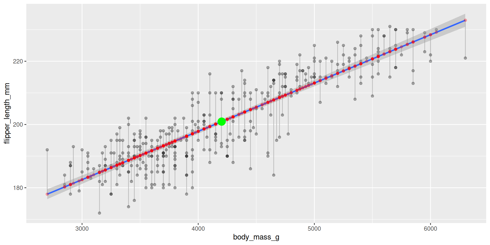
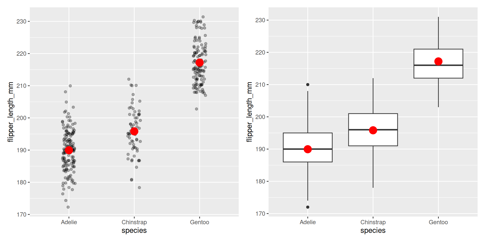
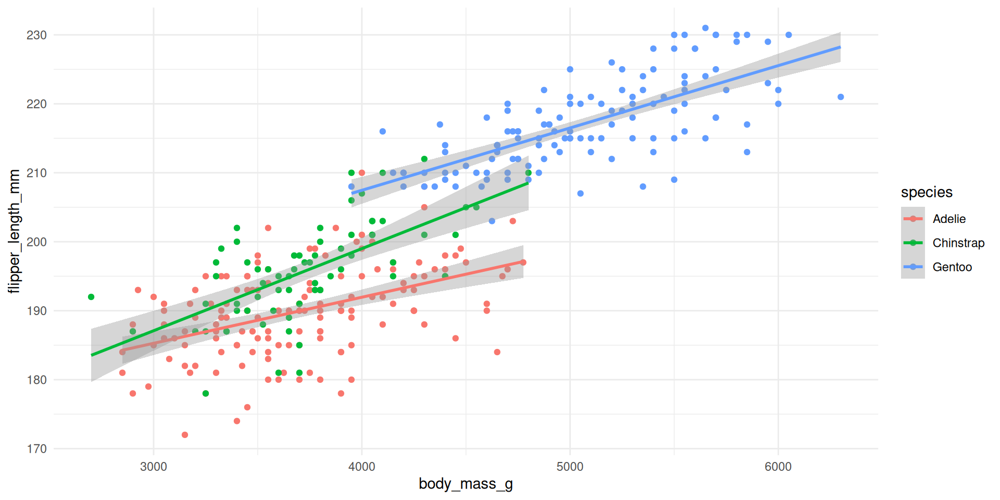
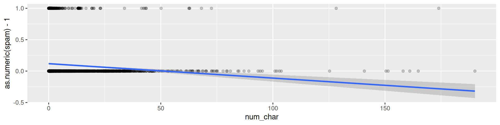
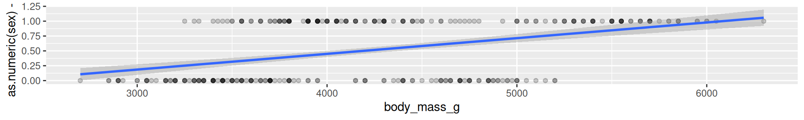
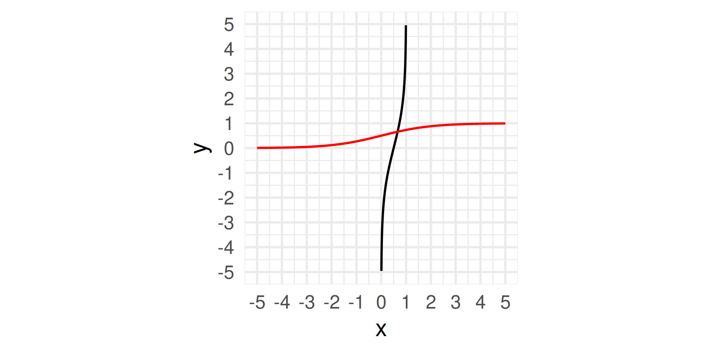
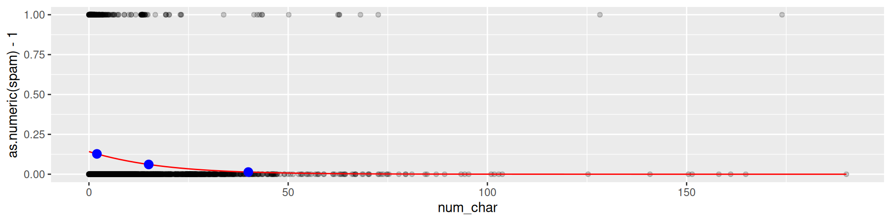
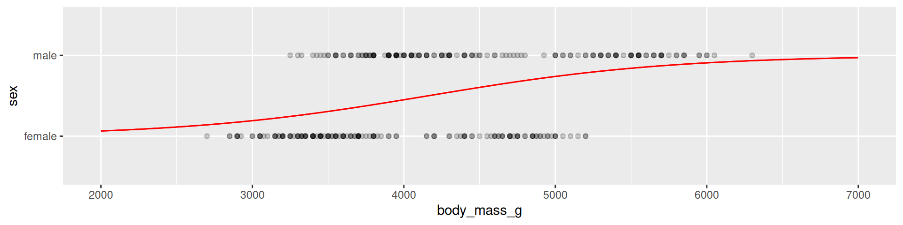

W#08: Linear Model: Categorical Predictors, More Predictors, Interaction; Categorical Response, Logistic Regression
Preliminaries
Recap: Linear Model
We fit a linear model predicting flipper_length_mm from body_mass_g using least squares regression. In R:
Call:
lm(formula = flipper_length_mm ~ body_mass_g, data = penguins)
Coefficients:
(Intercept) body_mass_g
136.72956 0.01528 As equation: average flipper_length_mm \(= 137 + 0.0153\cdot\) body_mass_g
Code
pengmod <- linear_reg() |>
set_engine("lm") |>
fit(flipper_length_mm ~ body_mass_g, data = penguins)
penguins |>
bind_cols(predict(pengmod, penguins)) |>
ggplot(aes(body_mass_g, flipper_length_mm)) +
geom_segment(
aes(
x = body_mass_g,
y = flipper_length_mm,
xend = body_mass_g,
yend = .pred
),
color = "gray"
) +
geom_point(alpha = 0.3) +
geom_smooth(method = "lm") +
geom_point(aes(y = .pred), color = "red", alpha = 0.3) +
geom_point(
data = tibble(
x = mean(penguins$body_mass_g, na.rm = T),
y = mean(penguins$flipper_length_mm, na.rm = T)
),
mapping = aes(x, y),
color = "green",
size = 5
)
Linear Models with Categorical Variables as Predictors
Categorical variables as predictors?
When a variable has categories the entries are not numbers. Can we use it as predictors?
Let’s explore and just try what happens with species as explanatory variable:
Code
# A tibble: 3 × 5
term estimate std.error statistic p.value
<chr> <dbl> <dbl> <dbl> <dbl>
1 (Intercept) 190. 0.540 351. 0
2 speciesChinstrap 5.87 0.970 6.05 3.79e- 9
3 speciesGentoo 27.2 0.807 33.8 1.84e-110Remember, we have three species: Adelie, Chinstrap, Gentoo. What happened?
Two of the three species categories appear as variables now.
- Categorical variables are automatically encoded as dummy variables
- Each coefficient describes the expected difference between flipper length of that particular species compared to the baseline level
- What is the baseline level? The first category! (Here alphabetically
"Adelie")
How do dummy variables look?
| species | speciesChinstrap | speciesGentoo |
|---|---|---|
| Adelie | 0 | 0 |
| Adelie | 0 | 0 |
| Chinstrap | 1 | 0 |
| Gentoo | 0 | 1 |
| Gentoo | 0 | 1 |
| Gentoo | 0 | 1 |
| Adelie | 0 | 0 |
| Chinstrap | 1 | 0 |
Then the fitting of the linear model is as before using variables which just have 0’s and 1’s as entries. (In machine learning called one-hot encoding)
Check: Create Dummies ourselves
Create dummy variables with if_else and show three example rows, one for each species:
Code
# A tibble: 3 × 3
flipper_length_mm speciesChinstrap speciesGentoo
<int> <dbl> <dbl>
1 181 0 0
2 225 0 1
3 193 1 0Equation:
average flipper_length_mm \(= \beta_0 + \beta_1\cdot\) speciesChinstrap \(+ \beta_2\cdot\) speciesGentoo
With fitted parameters \(\beta_0 \approx 190, \beta_1 \approx 5.87\) and \(\beta_2 = 27.2\)
Interpretation
Code
# A tibble: 3 × 5
term estimate std.error statistic p.value
<chr> <dbl> <dbl> <dbl> <dbl>
1 (Intercept) 190. 0.540 351. 0
2 speciesChinstrap 5.87 0.970 6.05 3.79e- 9
3 speciesGentoo 27.2 0.807 33.8 1.84e-110- Flipper length of the baseline species is the intercept.
- Average flipper length of Adelie is 190 mm
- Flipper length of the two other species add their coefficient
- Average flipper length of Chinstrap is 190 + 5.87 mm
- Average flipper length of Gentoo is 190 + 27.2 mm
Compare to a visualization
# A tibble: 3 × 5
term estimate std.error statistic p.value
<chr> <dbl> <dbl> <dbl> <dbl>
1 (Intercept) 190. 0.540 351. 0
2 speciesChinstrap 5.87 0.970 6.05 3.79e- 9
3 speciesGentoo 27.2 0.807 33.8 1.84e-110Code
jitterplots <- penguins |>
ggplot(aes(species, flipper_length_mm)) +
geom_jitter(width = 0.1, alpha = 0.3) +
stat_summary(fun.y = mean, geom = "point", size = 5, color = "red")
boxplots <- penguins |>
ggplot(aes(species, flipper_length_mm)) +
geom_boxplot() +
stat_summary(fun.y = mean, geom = "point", size = 5, color = "red")
jitterplots + boxplots
The red dots are the mean values for species.
Linear models and R-squared
Quality of different linear models?
Code
# A tibble: 2 × 5
term estimate std.error statistic p.value
<chr> <dbl> <dbl> <dbl> <dbl>
1 (Intercept) 137. 2.00 68.5 5.71e-201
2 body_mass_g 0.0153 0.000467 32.7 4.37e-107average flipper_length_mm \(= 137 + 0.0153\cdot\) body_mass_g
Code
# A tibble: 2 × 5
term estimate std.error statistic p.value
<chr> <dbl> <dbl> <dbl> <dbl>
1 (Intercept) 20.9 0.844 24.7 4.72e-78
2 bill_length_mm -0.0850 0.0191 -4.46 1.12e- 5average bill_depth_mm \(= 20.9 -0.085\cdot\) bill_length_mm
Technical: The idea of the tidy() function is to turn an object into a tidy tibble. Here, it extracts the coefficients of the linear model (and more statistical information).
R-squared of a fitted model
\(R^2\) is the percentage of variability in the response explained by the regression model.
R-squared is also called coefficient of determination.
Definition:
\(R^2 = 1 - \frac{SS_\text{res}}{SS_\text{tot}}\)
where \(SS_\text{res} = \sum_i(y_i - f_i)^2 = \sum_i e_i^2\) is the sum of the squared residuals, and
\(SS_\text{tot} = \sum_i(y_i - \bar y)^2\) the total sum of squares which is proportional to the variance of \(y\). (\(\bar y\) is the mean of \(y\).)

Linear model R-squared
linear_reg() |>
set_engine("lm") |>
fit(flipper_length_mm ~ body_mass_g, data = penguins) |>
glance()# A tibble: 1 × 12
r.squared adj.r.squared sigma statistic p.value df logLik AIC BIC
<dbl> <dbl> <dbl> <dbl> <dbl> <dbl> <dbl> <dbl> <dbl>
1 0.759 0.758 6.91 1071. 4.37e-107 1 -1146. 2297. 2309.
# ℹ 3 more variables: deviance <dbl>, df.residual <int>, nobs <int>The command glance shows summary statistics of model fits in a single row.
Interpretation R-squared? 75.9% of the variance of flipper length can be explained by a linear relation with body mass. Warning: “Explain” \(\neq\) causal claim!
linear_reg() |>
set_engine("lm") |>
fit(bill_depth_mm ~ bill_length_mm, data = penguins) |>
glance()# A tibble: 1 × 12
r.squared adj.r.squared sigma statistic p.value df logLik AIC BIC
<dbl> <dbl> <dbl> <dbl> <dbl> <dbl> <dbl> <dbl> <dbl>
1 0.0552 0.0525 1.92 19.9 0.0000112 1 -708. 1422. 1433.
# ℹ 3 more variables: deviance <dbl>, df.residual <int>, nobs <int>5.52% of the variance of bill depth can be explained by a linear relation with bill length.
R-squared and correlation
For a linear model with one predictor, the square of the correlation coefficient is the same as the R-squared of the model. Hence, the name \(R^2\)! Check with code:
linear_reg() |>
set_engine("lm") |>
fit(flipper_length_mm ~ body_mass_g, data = penguins) |>
glance()# A tibble: 1 × 12
r.squared adj.r.squared sigma statistic p.value df logLik AIC BIC
<dbl> <dbl> <dbl> <dbl> <dbl> <dbl> <dbl> <dbl> <dbl>
1 0.759 0.758 6.91 1071. 4.37e-107 1 -1146. 2297. 2309.
# ℹ 3 more variables: deviance <dbl>, df.residual <int>, nobs <int>[1] 0.8712018Linear models with more predictors
- Hey, we had already two predictors created all of a sudden when we were using a categorical variable with 3 categories
- We can also add more numerical predictors
Add predictors \(\to\) More coefficients
Code
# A tibble: 2 × 5
term estimate std.error statistic p.value
<chr> <dbl> <dbl> <dbl> <dbl>
1 (Intercept) 137. 2.00 68.5 5.71e-201
2 body_mass_g 0.0153 0.000467 32.7 4.37e-107Code
# A tibble: 3 × 5
term estimate std.error statistic p.value
<chr> <dbl> <dbl> <dbl> <dbl>
1 (Intercept) 122. 2.86 42.7 1.70e-138
2 body_mass_g 0.0131 0.000545 23.9 7.56e- 75
3 bill_length_mm 0.549 0.0801 6.86 3.31e- 11Code
# A tibble: 4 × 5
term estimate std.error statistic p.value
<chr> <dbl> <dbl> <dbl> <dbl>
1 (Intercept) 158. 4.63 34.1 1.80e-111
2 body_mass_g 0.0109 0.000538 20.3 1.93e- 60
3 bill_length_mm 0.592 0.0717 8.26 3.42e- 15
4 bill_depth_mm -1.68 0.181 -9.29 1.99e- 18More predictors: glance R-squared
Code
# A tibble: 1 × 12
r.squared adj.r.squared sigma statistic p.value df logLik AIC BIC
<dbl> <dbl> <dbl> <dbl> <dbl> <dbl> <dbl> <dbl> <dbl>
1 0.759 0.758 6.91 1071. 4.37e-107 1 -1146. 2297. 2309.
# ℹ 3 more variables: deviance <dbl>, df.residual <int>, nobs <int>Code
# A tibble: 1 × 12
r.squared adj.r.squared sigma statistic p.value df logLik AIC BIC
<dbl> <dbl> <dbl> <dbl> <dbl> <dbl> <dbl> <dbl> <dbl>
1 0.788 0.787 6.49 631. 4.88e-115 2 -1123. 2255. 2270.
# ℹ 3 more variables: deviance <dbl>, df.residual <int>, nobs <int>Code
# A tibble: 1 × 12
r.squared adj.r.squared sigma statistic p.value df logLik AIC BIC
<dbl> <dbl> <dbl> <dbl> <dbl> <dbl> <dbl> <dbl> <dbl>
1 0.831 0.830 5.80 556. 2.99e-130 3 -1084. 2179. 2198.
# ℹ 3 more variables: deviance <dbl>, df.residual <int>, nobs <int>More predictors: Equations
average flipper_length_mm \(= 137 + 0.0153\cdot\) body_mass_g
75.9% explained variance
average flipper_length_mm \(= 122 + 0.0131\cdot\) body_mass_g \(+ 0.549\cdot\) bill_length_mm
78.8% explained variance
average flipper_length_mm \(= 158 + 0.0109\cdot\) body_mass_g \(+ 0.592\cdot\) bill_length_mm \(- 1.68\cdot\) bill_length_mm
83.1% explained variance
Often more predictors bring higher R-squared. However, doing it blindly makes interpretation complicated and can lead to overfitting! (Treated later.)
Interaction Effects
Adding products of variables as new variable.
Categorical variable as main effect
linear_reg() |>
set_engine("lm") |>
fit(flipper_length_mm ~ body_mass_g + species, data = penguins) |>
tidy()# A tibble: 4 × 5
term estimate std.error statistic p.value
<chr> <dbl> <dbl> <dbl> <dbl>
1 (Intercept) 159. 2.39 66.6 2.45e-196
2 body_mass_g 0.00840 0.000634 13.3 1.40e- 32
3 speciesChinstrap 5.60 0.788 7.10 7.33e- 12
4 speciesGentoo 15.7 1.09 14.4 6.80e- 37A main effect by categorical dummy variables allows for different intercepts per species. (However, the slopes are the same.)
linear_reg() |>
set_engine("lm") |>
fit(flipper_length_mm ~ body_mass_g + species, data = penguins) |>
glance()# A tibble: 1 × 12
r.squared adj.r.squared sigma statistic p.value df logLik AIC BIC
<dbl> <dbl> <dbl> <dbl> <dbl> <dbl> <dbl> <dbl> <dbl>
1 0.854 0.853 5.40 659. 7.42e-141 3 -1060. 2129. 2149.
# ℹ 3 more variables: deviance <dbl>, df.residual <int>, nobs <int>Adding species increases R-squared better than adding bill length and bill depth together!
Adding as interaction effect
linear_reg() |>
set_engine("lm") |>
fit(flipper_length_mm ~ body_mass_g * species, data = penguins) |>
tidy()# A tibble: 6 × 5
term estimate std.error statistic p.value
<chr> <dbl> <dbl> <dbl> <dbl>
1 (Intercept) 165. 3.55 46.5 1.56e-148
2 body_mass_g 0.00668 0.000952 7.01 1.30e- 11
3 speciesChinstrap -13.9 7.30 -1.90 5.84e- 2
4 speciesGentoo 6.06 6.05 1.00 3.17e- 1
5 body_mass_g:speciesChinstrap 0.00523 0.00195 2.68 7.66e- 3
6 body_mass_g:speciesGentoo 0.00236 0.00135 1.75 8.16e- 2- Note the
*for interaction effect! - Also main effects for both variables are in as coefficients.
- Adelie is the baseline species (because it is first in the alphabet).
- An interaction effect allows for different slopes for each species!
Regression lines by species

Compare the slopes to the regression output on the slides before!
Different equations for each species!
Code
# A tibble: 6 × 5
term estimate std.error statistic p.value
<chr> <dbl> <dbl> <dbl> <dbl>
1 (Intercept) 165. 3.55 46.5 1.56e-148
2 body_mass_g 0.00668 0.000952 7.01 1.30e- 11
3 speciesChinstrap -13.9 7.30 -1.90 5.84e- 2
4 speciesGentoo 6.06 6.05 1.00 3.17e- 1
5 body_mass_g:speciesChinstrap 0.00523 0.00195 2.68 7.66e- 3
6 body_mass_g:speciesGentoo 0.00236 0.00135 1.75 8.16e- 2Adelie:
average flipper_length_mm \(= 165 + 0.00668\cdot\) body_mass_g
Chinstrap:
average flipper_length_mm \(= 165 - 13.6 + (0.00668 + 0.00523)\cdot\) body_mass_g
Gentoo:
average flipper_length_mm \(= 165 + 6.06 + (0.00668 + 0.00236)\cdot\) body_mass_g
Improvement of interaction effects is small here
linear_reg() |>
set_engine("lm") |>
fit(flipper_length_mm ~ body_mass_g + species, data = penguins) |>
glance()# A tibble: 1 × 12
r.squared adj.r.squared sigma statistic p.value df logLik AIC BIC
<dbl> <dbl> <dbl> <dbl> <dbl> <dbl> <dbl> <dbl> <dbl>
1 0.854 0.853 5.40 659. 7.42e-141 3 -1060. 2129. 2149.
# ℹ 3 more variables: deviance <dbl>, df.residual <int>, nobs <int>linear_reg() |>
set_engine("lm") |>
fit(flipper_length_mm ~ body_mass_g * species, data = penguins) |>
glance()# A tibble: 1 × 12
r.squared adj.r.squared sigma statistic p.value df logLik AIC BIC
<dbl> <dbl> <dbl> <dbl> <dbl> <dbl> <dbl> <dbl> <dbl>
1 0.857 0.855 5.35 404. 9.60e-140 5 -1056. 2125. 2152.
# ℹ 3 more variables: deviance <dbl>, df.residual <int>, nobs <int>Interaction effects of two categoricals
Assume \(x_1\) and \(x_2\) are categorical variables. We add their product in the linear model as a new variable: \(y_i = \beta_0 + \beta_1x_1 + \beta_2x_2 + \beta_{3}x_1x_2 + \dots\).
Example: \(x_1\) is gender female and \(x_2\) having kids
Code
| gender_female | has_kids | gender_female_x_has_kids |
|---|---|---|
| 0 | 1 | 0 |
| 1 | 0 | 0 |
| 1 | 1 | 1 |
| 0 | 0 | 0 |
- What is the baseline? Being male without kids.
- Thought experiment: When we estimate a model explaining life satisfaction with these. How would we see if being a mother increases life satisfaction more than being a father? positive coefficient for
gender_female_x_has_kids
Predicting Categorical Data
Large part of the content adapted from http://datasciencebox.org.
What if response is binary?
- Example: Spam filter for emails
Rows: 3,921
Columns: 21
$ spam <fct> 0, 0, 0, 0, 0, 0, 0, 0, 0, 0, 0, 0, 0, 0, 0, 0, 0, 0, 0, …
$ to_multiple <fct> 0, 0, 0, 0, 0, 0, 1, 1, 0, 0, 0, 0, 0, 0, 0, 0, 0, 0, 0, …
$ from <fct> 1, 1, 1, 1, 1, 1, 1, 1, 1, 1, 1, 1, 1, 1, 1, 1, 1, 1, 1, …
$ cc <int> 0, 0, 0, 0, 0, 0, 0, 1, 0, 0, 0, 1, 0, 1, 2, 1, 0, 2, 0, …
$ sent_email <fct> 0, 0, 0, 0, 0, 0, 1, 1, 0, 0, 1, 0, 0, 1, 0, 1, 0, 0, 1, …
$ time <dttm> 2012-01-01 07:16:41, 2012-01-01 08:03:59, 2012-01-01 17:…
$ image <dbl> 0, 0, 0, 0, 0, 0, 0, 1, 0, 0, 0, 0, 0, 0, 0, 0, 0, 0, 0, …
$ attach <dbl> 0, 0, 0, 0, 0, 0, 0, 1, 0, 0, 0, 0, 0, 0, 0, 0, 0, 0, 0, …
$ dollar <dbl> 0, 0, 4, 0, 0, 0, 0, 0, 0, 0, 0, 0, 0, 0, 2, 0, 5, 0, 0, …
$ winner <fct> no, no, no, no, no, no, no, no, no, no, no, no, no, no, n…
$ inherit <dbl> 0, 0, 1, 0, 0, 0, 0, 0, 0, 0, 0, 0, 0, 0, 0, 0, 0, 0, 0, …
$ viagra <dbl> 0, 0, 0, 0, 0, 0, 0, 0, 0, 0, 0, 0, 0, 0, 0, 0, 0, 0, 0, …
$ password <dbl> 0, 0, 0, 0, 2, 2, 0, 0, 0, 0, 0, 0, 0, 0, 0, 0, 1, 0, 0, …
$ num_char <dbl> 11.370, 10.504, 7.773, 13.256, 1.231, 1.091, 4.837, 7.421…
$ line_breaks <int> 202, 202, 192, 255, 29, 25, 193, 237, 69, 68, 25, 79, 191…
$ format <fct> 1, 1, 1, 1, 0, 0, 1, 1, 0, 1, 1, 0, 1, 1, 1, 1, 1, 1, 0, …
$ re_subj <fct> 0, 0, 0, 0, 0, 0, 0, 0, 0, 0, 0, 1, 0, 1, 1, 1, 0, 1, 1, …
$ exclaim_subj <dbl> 0, 0, 0, 0, 0, 0, 0, 0, 0, 0, 0, 0, 0, 0, 0, 0, 1, 0, 0, …
$ urgent_subj <fct> 0, 0, 0, 0, 0, 0, 0, 0, 0, 0, 0, 0, 0, 0, 0, 0, 0, 0, 0, …
$ exclaim_mess <dbl> 0, 1, 6, 48, 1, 1, 1, 18, 1, 0, 2, 1, 0, 10, 4, 10, 20, 0…
$ number <fct> big, small, small, small, none, none, big, small, small, …Multinomial response variable?
- We will not cover other categorical variables than binary ones here.
- However, many of the probabilistic concepts transfer.
Email Example: Variables
?email shows all variable descriptions. For example:
spamIndicator for whether the email was spam.fromWhether the message was listed as from anyone (this is usually set by default for regular outgoing email).ccNumber of people cc’ed.timeTime at which email was sent.attachThe number of attached files.dollarThe number of times a dollar sign or the word “dollar” appeared in the email.num_charThe number of characters in the email, in thousands.re_subjWhether the subject started with “Re:”, “RE:”, “re:”, or “rE:”
Email Example: Data exploration
Would you expect spam to be longer or shorter?
Would you expect spam subject to start with “Re:” or the like?
Linear models?
Both seem to give some signal. How can we model the relationship?
We focus first on just num_char:
Code

We would like to have a better concept!
A penguins example - predict sex

It does not make much sense to predict 0-1-values with a linear model.
A probabilistic concept
- We treat each outcome (spam and not) as successes and failures arising from separate Bernoulli trials
- Bernoulli trial: a random experiment with exactly two possible outcomes, success and failure, in which the probability of success is the same every time the experiment is conducted
- Each email is treated as Bernoulli trial with separate probability of success
\[ y_i ∼ \text{Bernoulli}(p_i) \]
- We use the predictor variables to model the Bernoulli parameter \(p_i\)
- Now we conceptualized a continuous response, but still a linear model does not fit perfectly for \(p_i\) (since a probability is between 0 and 1).
- However, we can transform the linear model to have the appropriate range.
Generalized linear models
Characterising GLMs
- Generalized linear models (GLMs) are a way of addressing many problems in regression
- Logistic regression is one example
All GLMs have the following three characteristics:
- A probability distribution as a generative model for the outcome variable \(y_i \sim \text{Distribution}(\text{parameter})\)
- A linear model \(\eta = \beta_0 + \beta_1 X_1 + \cdots + \beta_k X_k\)
where \(\eta\) is related to a mean parameter of the distribution by the …
- Link function that relates the linear model to the parameter of the outcome distribution.
Logistic regression
Logistic regression
- Logistic regression is a GLM used to model a binary categorical outcome using numerical and categorical predictors.
- The distribution is the Bernoulli distribution with parameter \(p\) (success probability).
- As link function connecting \(\eta_i\) to \(p_i\) we use the logit function.
- Logit function: \(\text{logit}: [0,1] \to \mathbb{R}\)
\[\text{logit}(p) = \log\left(\frac{p}{1-p}\right)\]
- \(\frac{p}{1-p}\) is called the odds of a success which happens with probability \(p\).
Example: Roll a six with a die has \(p=1/6\). Thus, the odds are \(\frac{1/6}{5/6} = 1/5\). Sometimes written as 1:5. “The odds of success are one to five.”
Properties of the logit
- Logit takes values between 0 and 1 and returns values between \(-\infty\) and \(\infty\)
- The inverse of the logit function if the logistic function (mapping values from \(-\infty\) and \(\infty\) to values between 0 and 1): \[\text{logit}^{-1}(x) = \text{logistic}(x) = \frac{e^x}{1+e^x} = \frac{1}{1+e^{-x}}\]
- Logit can be interpreted as the log odds of a success – more on this later.
Logit and logistic function
Code
ggplot() +
geom_function(
fun = function(x) log(x / (1 - x)),
xlim = c(0.001, 0.999),
n = 500
) +
geom_function(fun = function(x) 1 / (1 + exp(-x)), color = "red") +
scale_x_continuous(breaks = seq(-5, 5, 1), limits = c(-5, 5)) +
scale_y_continuous(breaks = seq(-5, 5, 1), limits = c(-5, 5)) +
coord_fixed() +
theme_minimal(base_size = 24) +
labs(x = "x")
The logistic regression model
- Based on the three GLM criteria we have
- \(y_i \sim \text{Bernoulli}(p_i)\)
- \(\eta_i = \beta_0+\beta_1 x_{1,i} + \cdots + \beta_n x_{n,i}\)
- \(\text{logit}(p_i) = \eta_i\)
- From which we get
\[p_i = \frac{e^{\beta_0+\beta_1 x_{1,i} + \cdots + \beta_k x_{k,i}}}{1 + e^{\beta_0+\beta_1 x_{1,i} + \cdots + \beta_k x_{k,i}}}\]
Modeling spam
With tidymodels we fit a GLM in the same way as a linear model except we
- specify the model with
logistic_reg() - use
"glm"instead of"lm"as the engine - define
family = "binomial"for the link function to be used in the model
Spam model
# A tibble: 2 × 5
term estimate std.error statistic p.value
<chr> <dbl> <dbl> <dbl> <dbl>
1 (Intercept) -1.80 0.0716 -25.1 2.04e-139
2 num_char -0.0621 0.00801 -7.75 9.50e- 15Model: \[\log\left(\frac{p}{1-p}\right) = -1.80-0.0621\cdot \text{num_char}\]
Predicted probability: Examples
We can compute the predicted probability that an email with 2000 character is spam as follows:
\[\log\left(\frac{p}{1-p}\right) = -1.80-0.0621\cdot 2 = -1.9242\]
(Note: num_char is in thousands.)
\[\frac{p}{1-p} = e^{-1.9242} = 0.15 \Rightarrow p = 0.15 \cdot (1 - p)\]
\[p = 0.15 - 0.15\cdot p \Rightarrow 1.15\cdot p = 0.15\]
\[p = 0.15 / 1.15 = 0.13\]
Predicted probability
Code
logistic <- function(t) 1 / (1 + exp(-t))
preds <- tibble(x = c(2, 15, 40), y = logistic(-1.80 - 0.0621 * x))
email |>
ggplot(aes(x = num_char, y = as.numeric(spam) - 1)) +
geom_point(alpha = 0.2) +
geom_function(fun = function(x) logistic(-1.80 - 0.0621 * x), color = "red") +
geom_point(data = preds, mapping = aes(x, y), color = "blue", size = 3)
Spam probability 2,000 characters: 0.1273939
Spam probability 15,000 characters: 0.06114
Spam probability 40,000 characters: 0.0135999
Interpretation of coefficients
\[\log\left(\frac{p}{1-p}\right) = -1.80-0.0621\cdot \text{num_char}\]
What does an increase by thousand characters (num_char + 1) imply?
Let us assume the predicted probability of an email is \(p_0\). Then an increase of num_char by one implied that the log-odds become
\[\log\left(\frac{p_0}{1-p_0}\right) - 0.0621 = \log\left(\frac{p_0}{1-p_0}\right) - \log(e^{0.0621})\]
\[ = \log\left(\frac{p_0}{1-p_0}\right) + \log(\frac{1}{e^{0.0621}}) = \log\left(\frac{p_0}{1-p_0} \frac{1}{e^{0.0621}}\right) = \log\left(\frac{p_0}{1-p_0} 0.94\right)\]
That means the odds of being spam decrease by 6%.
Penguins example
library(palmerpenguins)
sex_fit <- logistic_reg() |>
set_engine("glm") |>
fit(sex ~ body_mass_g, data = na.omit(penguins), family = "binomial")
tidy(sex_fit)# A tibble: 2 × 5
term estimate std.error statistic p.value
<chr> <dbl> <dbl> <dbl> <dbl>
1 (Intercept) -5.16 0.724 -7.13 1.03e-12
2 body_mass_g 0.00124 0.000173 7.18 7.10e-13
Summarizing the Idea of Logistic Regression
- We want to explain/predict a binary response variable.
- We want to use the concept of linear models.
- To that end we first interprete each outcome as the outcome of a probabilisitic event happening with probability \(p_i\). That way we transform the problem from modeling a binary outcome to a numerical outcome.
- However, probabilities are bounded between 0 and 1.
- We use the logit function to map probabilities to the real line. That means we predict the log-odds of the probability.
- We model the log-odds with a linear model.
Sensitivity and specificity
- Two performance measures for a prediction model with binary outcome.
- Also called a “binary classifier.
- Today, just the idea.
False positive and negative
| Email labelled spam | Email labelled not spam | |
|---|---|---|
| Email is spam | True positive | False negative (Type 2 error) |
| Email is not spam | False positive (Type 1 error) | True negative |
Confusion matrix
More general: Confusion matrix of statistical classification:

Sensitivity and specificity
Sensitivity is the true positive rate: TP / (TP + FN)
Specificity is the true negative rate: TN / (TN + FP)
For spam a positive case is an email labelled as spam:
Sensitivity: Fraction of emails labelled as spam among all emails which are spam.
Low sensitivity \(\to\) More false negatives \(\to\) More spam in you inbox!
Specificity: Fraction of emails labelled as not spam among all emails which are not spam.
Low specificity \(\to\) More false positives \(\to\) More relevant emails in spam folder!
If you were designing a spam filter, would you want sensitivity and specificity to be high or low? What are the trade-offs associated with each decision?
COVID-19 tests
A COVID-19 test is called positive when it indicates the presence of the virus.
What is the sensitivity of a test?
Probability the test is positive when the tested person has COVID-19. (The true positive rate.)
What is the specificity of a test?
Probability the test is negative when the tested person does not have COVID-19. (The true negative rate.)
Often the sensitivity is around 90% and the specificity is around 99%. What does that mean?
- When you do not have COVID the test is more likely to be correct, than when you do have COVID. However, specificity and sensitivity do not tell something about the probability to have COVID when the test is positive, or to not have COVID when the test is negative.
Another view

Prediction
Prediction vs. Explanation
Explanation and Prediction are different Modelling Mindsets1.
- With an Explanatory Mindset we want to understand the relationship between the predictors and the outcome.
- We interpret coefficients
- We ask what variance can be explained by a linear model or a PCA
- With a Predictive Mindset we want to predict the outcome for new observations.
- We use the model to predict the outcome for new observations
- We ask how well we can predict the outcome for new observations
- We may ignore why the model works
Important: The mindsets are very different but they may use the same models!

MDSSB-DSCO-02: Data Science Concepts